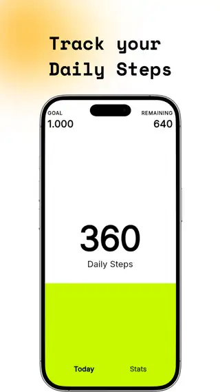

Path : Step Counter
صحة ورياضة
Path is a lightweight, open-source step tracking application designed with a focus on privacy and simplicity. Track your daily activity without unnecessary bloat, ads, or data collection. WHY CHOOSE PATH? • Privacy First: All data is stored locally on your device. No accounts, no cloud servers, and
✓ ترخيص مفتوح (GPL-3.0-only) · آخر تحديث: 2026-11-23
2.0.9الإصدار
3.5 MBالحجم
GPL-3.0-onlyالرخصة
Open in Kanzتحميل APK (3.5 MB)
Download APK
SHA-256: 69d968eff3945d8e84ac6e15e8005da01f81cec86d1e846095189491b603229e

تطبيقات تانية لنفس المطوّر (34)
More apps from this developer: com.sidhant
امسح الكود لفتح صفحة التطبيق
Scan to open this app page
لو كنز مش متثبت عندك: نزّل متجر كنز.
Not installed? Get the Kanz store.